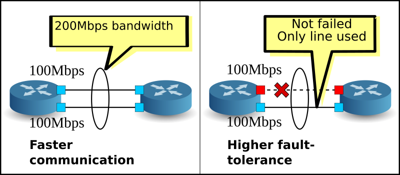
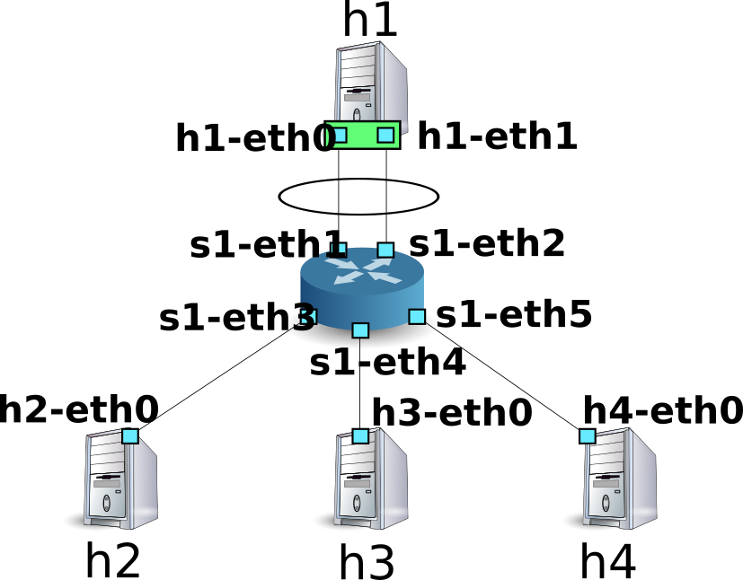

Link Aggregation¶
This section describes how to implement the link aggregation function using Ryu.
Link Aggregation¶
Link aggregation is a technology defined in IEEE802.1AX-2008, which combines multiple physical lines to be used as a logical link. With the link aggregation function, it is possible to increase communication speed between specific network devices. At the same time, by securing redundancy, it is possible to improve fault tolerance.
{kind=link}
In order to use the link aggregation function, it is necessary to configure beforehand the respective network devices as to which interfaces are aggregated as one group.
There are two methods used to start the link aggregation function, the static method, in which each each network device is instructed directly, and the dynamic method, in which the function is started dynamically using the protocol called Link Aggregation Control Protocol (LACP).
When the dynamic method is adopted, counterpart interfaces of the network devices periodically exchange LACP data units to continuously check with each other that communication is available. When exchange of LACP data units is interrupted, the occurrence of a failure is assumed and the relevant network device becomes unavailable. As a result, sending or receiving of packets is only performed by the remaining interfaces. This method has the advantage that even when a relay device such as a media converter is installed between network devices, link down of the other side of the relay device can be detected. This chapter discusses the dynamic link aggregation function using LACP.
Executing the Ryu Application¶
Let’s put off explaining the source and first execute Ryu’s link aggregation application.
simple_switch_lacp.py provided in Ryu’s source tree is an application dedicated to OpenFlow 1.0, therefore, we will create simple_switch_lacp_13.py, which supports OpenFlow 1.3. This program is an application to which the link aggregation function has been added to the switching hub of ” Switching Hub.”
Source name: simple_switch_lacp_13.py
from ryu.base import app_manager
from ryu.controller import ofp_event
from ryu.controller.handler import CONFIG_DISPATCHER
from ryu.controller.handler import MAIN_DISPATCHER
from ryu.controller.handler import set_ev_cls
from ryu.ofproto import ofproto_v1_3
from ryu.lib import lacplib
from ryu.lib.dpid import str_to_dpid
from ryu.lib.packet import packet
from ryu.lib.packet import ethernet
class SimpleSwitchLacp13(app_manager.RyuApp):
OFP_VERSIONS = [ofproto_v1_3.OFP_VERSION]
_CONTEXTS = {'lacplib': lacplib.LacpLib}
def __init__(self, *args, **kwargs):
super(SimpleSwitchLacp13, self).__init__(*args, **kwargs)
self.mac_to_port = {}
self._lacp = kwargs['lacplib']
self._lacp.add(
dpid=str_to_dpid('0000000000000001'), ports=[1, 2])
@set_ev_cls(ofp_event.EventOFPSwitchFeatures, CONFIG_DISPATCHER)
def switch_features_handler(self, ev):
datapath = ev.msg.datapath
ofproto = datapath.ofproto
parser = datapath.ofproto_parser
# install table-miss flow entry
#
# We specify NO BUFFER to max_len of the output action due to
# OVS bug. At this moment, if we specify a lesser number, e.g.,
# 128, OVS will send Packet-In with invalid buffer_id and
# truncated packet data. In that case, we cannot output packets
# correctly.
match = parser.OFPMatch()
actions = [parser.OFPActionOutput(ofproto.OFPP_CONTROLLER,
ofproto.OFPCML_NO_BUFFER)]
self.add_flow(datapath, 0, match, actions)
def add_flow(self, datapath, priority, match, actions):
ofproto = datapath.ofproto
parser = datapath.ofproto_parser
inst = [parser.OFPInstructionActions(ofproto.OFPIT_APPLY_ACTIONS,
actions)]
mod = parser.OFPFlowMod(datapath=datapath, priority=priority,
match=match, instructions=inst)
datapath.send_msg(mod)
def del_flow(self, datapath, match):
ofproto = datapath.ofproto
parser = datapath.ofproto_parser
mod = parser.OFPFlowMod(datapath=datapath,
command=ofproto.OFPFC_DELETE,
out_port=ofproto.OFPP_ANY,
out_group=ofproto.OFPG_ANY,
match=match)
datapath.send_msg(mod)
@set_ev_cls(lacplib.EventPacketIn, MAIN_DISPATCHER)
def _packet_in_handler(self, ev):
msg = ev.msg
datapath = msg.datapath
ofproto = datapath.ofproto
parser = datapath.ofproto_parser
in_port = msg.match['in_port']
pkt = packet.Packet(msg.data)
eth = pkt.get_protocols(ethernet.ethernet)[0]
dst = eth.dst
src = eth.src
dpid = datapath.id
self.mac_to_port.setdefault(dpid, {})
self.logger.info("packet in %s %s %s %s", dpid, src, dst, in_port)
# learn a mac address to avoid FLOOD next time.
self.mac_to_port[dpid][src] = in_port
if dst in self.mac_to_port[dpid]:
out_port = self.mac_to_port[dpid][dst]
else:
out_port = ofproto.OFPP_FLOOD
actions = [parser.OFPActionOutput(out_port)]
# install a flow to avoid packet_in next time
if out_port != ofproto.OFPP_FLOOD:
match = parser.OFPMatch(in_port=in_port, eth_dst=dst)
self.add_flow(datapath, 1, match, actions)
data = None
if msg.buffer_id == ofproto.OFP_NO_BUFFER:
data = msg.data
out = parser.OFPPacketOut(datapath=datapath, buffer_id=msg.buffer_id,
in_port=in_port, actions=actions, data=data)
datapath.send_msg(out)
@set_ev_cls(lacplib.EventSlaveStateChanged, MAIN_DISPATCHER)
def _slave_state_changed_handler(self, ev):
datapath = ev.datapath
dpid = datapath.id
port_no = ev.port
enabled = ev.enabled
self.logger.info("slave state changed port: %d enabled: %s",
port_no, enabled)
if dpid in self.mac_to_port:
for mac in self.mac_to_port[dpid]:
match = datapath.ofproto_parser.OFPMatch(eth_dst=mac)
self.del_flow(datapath, match)
del self.mac_to_port[dpid]
self.mac_to_port.setdefault(dpid, {})
Configuring an Experimental Environment¶
Let’s configure a link aggregation between the OpenFlow switch and Linux host.
For details on the environment setting and login method, etc. to use the VM images, refer to ” Switching Hub.”
First of all, using Mininet, create the topology shown below.
{kind=link}
Create a script to call Mininet’s API and configure the necessary topology.
Source name: link_aggregation.py
#!/usr/bin/env python
from mininet.cli import CLI
from mininet.net import Mininet
from mininet.node import RemoteController
from mininet.term import makeTerm
if '__main__' == __name__:
net = Mininet(controller=RemoteController)
c0 = net.addController('c0', port=6633)
s1 = net.addSwitch('s1')
h1 = net.addHost('h1')
h2 = net.addHost('h2', mac='00:00:00:00:00:22')
h3 = net.addHost('h3', mac='00:00:00:00:00:23')
h4 = net.addHost('h4', mac='00:00:00:00:00:24')
net.addLink(s1, h1)
net.addLink(s1, h1)
net.addLink(s1, h2)
net.addLink(s1, h3)
net.addLink(s1, h4)
net.build()
c0.start()
s1.start([c0])
net.startTerms()
CLI(net)
net.stop()
By executing this script, a topology is created in which two links exist between host h1 and switch s1. It is possible to use the net command to check the created topology.
ryu@ryu-vm:~$ sudo ./link_aggregation.py
Unable to contact the remote controller at 127.0.0.1:6633
mininet> net
c0
s1 lo: s1-eth1:h1-eth0 s1-eth2:h1-eth1 s1-eth3:h2-eth0 s1-eth4:h3-eth0 s1-eth5:h4-eth0
h1 h1-eth0:s1-eth1 h1-eth1:s1-eth2
h2 h2-eth0:s1-eth3
h3 h3-eth0:s1-eth4
h4 h4-eth0:s1-eth5
mininet>
Setting Link Aggregation in Host h1¶
Make necessary settings on Linux of host h1 beforehand. About command input in this section, input them on xterm of host h1.
First of all, load the driver module to perform link aggregation. In Linux, the link aggregation function is taken care of by the bonding driver. Create the /etc/modprobe.d/bonding.conf configuration file beforehand.
File name: /etc/modprobe.d/bonding.conf
alias bond0 bonding
options bonding mode=4
Node: h1:
root@ryu-vm:~# modprobe bonding
mode=4 indicates that dynamic link aggregation is performed using LACP. Setting is omitted here because it is the default but it has been set so that the exchange interval of the LACP data units is SLOW (30-second intervals) and the sort logic is based on the destination MAC address.
Next, create a new logical interface named bond0. Also, set an appropriate value for the MAC address of bond0.
Node: h1:
root@ryu-vm:~# ip link add bond0 type bond
root@ryu-vm:~# ip link set bond0 address 02:01:02:03:04:08
Add the physical interfaces of h1-eth0 and h1-eth1 to the created local interface group. At that time, you need to make the physical interface to have been down. Also, rewrite the MAC address of the physical interface, which was randomly decided, to an easy-to-understand value beforehand.
Node: h1:
root@ryu-vm:~# ip link set h1-eth0 down
root@ryu-vm:~# ip link set h1-eth0 address 00:00:00:00:00:11
root@ryu-vm:~# ip link set h1-eth0 master bond0
root@ryu-vm:~# ip link set h1-eth1 down
root@ryu-vm:~# ip link set h1-eth1 address 00:00:00:00:00:12
root@ryu-vm:~# ip link set h1-eth1 master bond0
Assign an IP address to the logical interface. Here, let’s assign 10.0.0.1. Because an IP address has been assigned to h1-eth0, delete this address.
Node: h1:
root@ryu-vm:~# ip addr add 10.0.0.1/8 dev bond0
root@ryu-vm:~# ip addr del 10.0.0.1/8 dev h1-eth0
Finally, make the logical interface up.
Node: h1:
root@ryu-vm:~# ip link set bond0 up
Now, let’s check the state of each interface.
Node: h1:
root@ryu-vm:~# ifconfig
bond0 Link encap:Ethernet HWaddr 02:01:02:03:04:08
inet addr:10.0.0.1 Bcast:0.0.0.0 Mask:255.0.0.0
UP BROADCAST RUNNING MASTER MULTICAST MTU:1500 Metric:1
RX packets:0 errors:0 dropped:0 overruns:0 frame:0
TX packets:10 errors:0 dropped:0 overruns:0 carrier:0
collisions:0 txqueuelen:0
RX bytes:0 (0.0 B) TX bytes:1240 (1.2 KB)
h1-eth0 Link encap:Ethernet HWaddr 02:01:02:03:04:08
UP BROADCAST RUNNING SLAVE MULTICAST MTU:1500 Metric:1
RX packets:0 errors:0 dropped:0 overruns:0 frame:0
TX packets:5 errors:0 dropped:0 overruns:0 carrier:0
collisions:0 txqueuelen:1000
RX bytes:0 (0.0 B) TX bytes:620 (620.0 B)
h1-eth1 Link encap:Ethernet HWaddr 02:01:02:03:04:08
UP BROADCAST RUNNING SLAVE MULTICAST MTU:1500 Metric:1
RX packets:0 errors:0 dropped:0 overruns:0 frame:0
TX packets:5 errors:0 dropped:0 overruns:0 carrier:0
collisions:0 txqueuelen:1000
RX bytes:0 (0.0 B) TX bytes:620 (620.0 B)
lo Link encap:Local Loopback
inet addr:127.0.0.1 Mask:255.0.0.0
UP LOOPBACK RUNNING MTU:16436 Metric:1
RX packets:0 errors:0 dropped:0 overruns:0 frame:0
TX packets:0 errors:0 dropped:0 overruns:0 carrier:0
collisions:0 txqueuelen:0
RX bytes:0 (0.0 B) TX bytes:0 (0.0 B)
You can see that logical interface bond0 is the MASTER and physical interface h1-eth0 and h1-eth1 are the SLAVE. Also, you can see that all of the MAC addresses of bond0, h1-eth0, and h1-eth1 are the same.
Check the state of the bonding driver as well.
Node: h1:
root@ryu-vm:~# cat /proc/net/bonding/bond0
Ethernet Channel Bonding Driver: v3.7.1 (April 27, 2011)
Bonding Mode: IEEE 802.3ad Dynamic link aggregation
Transmit Hash Policy: layer2 (0)
MII Status: up
MII Polling Interval (ms): 100
Up Delay (ms): 0
Down Delay (ms): 0
802.3ad info
LACP rate: slow
Min links: 0
Aggregator selection policy (ad_select): stable
Active Aggregator Info:
Aggregator ID: 1
Number of ports: 1
Actor Key: 33
Partner Key: 1
Partner Mac Address: 00:00:00:00:00:00
Slave Interface: h1-eth0
MII Status: up
Speed: 10000 Mbps
Duplex: full
Link Failure Count: 0
Permanent HW addr: 00:00:00:00:00:11
Aggregator ID: 1
Slave queue ID: 0
Slave Interface: h1-eth1
MII Status: up
Speed: 10000 Mbps
Duplex: full
Link Failure Count: 0
Permanent HW addr: 00:00:00:00:00:12
Aggregator ID: 2
Slave queue ID: 0
You can check the exchange intervals (LACP rate: slow) of the LACP data units and sort logic setting (Transmit Hash Policy: layer2 (0)). You can also check the MAC address of the physical interfaces h1-eth0 and h1-eth1.
Now pre-setting for host h1 has been completed.
Setting OpenFlow Version¶
Set the OpenFlow version of switch s1 to 1.3. Input this command on xterm of switch s1.
Node: s1:
root@ryu-vm:~# ovs-vsctl set Bridge s1 protocols=OpenFlow13
Executing the Switching Hub¶
This completes the preparation portion so let’s move on to executing the Ryu application created at the beginning of the document.
Execute the following commands on xterm having the window title “Node: c0 (root)”.
Node: c0:
ryu@ryu-vm:~$ ryu-manager ./simple_switch_lacp_13.py
loading app ./simple_switch_lacp_13.py
loading app ryu.controller.ofp_handler
creating context lacplib
instantiating app ./simple_switch_lacp_13.py
instantiating app ryu.controller.ofp_handler
...
Host h1 sends one LACP data unit every 30 seconds. A while after start, the switch receives the LACP data unit from host h1 and outputs it to the operation log.
Node: c0:
...
[LACP][INFO] SW=0000000000000001 PORT=1 LACP received.
[LACP][INFO] SW=0000000000000001 PORT=1 the slave i/f has just been up.
[LACP][INFO] SW=0000000000000001 PORT=1 the timeout time has changed.
[LACP][INFO] SW=0000000000000001 PORT=1 LACP sent.
slave state changed port: 1 enabled: True
[LACP][INFO] SW=0000000000000001 PORT=2 LACP received.
[LACP][INFO] SW=0000000000000001 PORT=2 the slave i/f has just been up.
[LACP][INFO] SW=0000000000000001 PORT=2 the timeout time has changed.
[LACP][INFO] SW=0000000000000001 PORT=2 LACP sent.
slave state changed port: 2 enabled: True
...
The log indicates the following items:
LACP received.
An LACP data unit was received.
the slave i/f has just been up.
The port, which was in a disabled state, was enabled.
the timeout time has changed.
The communication monitoring time of the LACP data unit was changed (in this case, the default state of 0 seconds was changed to LONG_TIMEOUT_TIME 90 seconds).
LACP sent.
The response LACP data unit was sent.
slave state changed ...
The application received an
EventSlaveStateChangedevent from the LACP library (details of the event are explained later).
The switch sends response LACP data unit each time it receives LACP data unit from host h1.
Node: c0:
...
[LACP][INFO] SW=0000000000000001 PORT=1 LACP received.
[LACP][INFO] SW=0000000000000001 PORT=1 LACP sent.
[LACP][INFO] SW=0000000000000001 PORT=2 LACP received.
[LACP][INFO] SW=0000000000000001 PORT=2 LACP sent.
...
Let’s check flow entry.
Node: s1:
root@ryu-vm:~# ovs-ofctl -O openflow13 dump-flows s1
OFPST_FLOW reply (OF1.3) (xid=0x2):
cookie=0x0, duration=14.565s, table=0, n_packets=1, n_bytes=124, idle_timeout=90, send_flow_rem priority=65535,in_port=2,dl_src=00:00:00:00:00:12,dl_type=0x8809 actions=CONTROLLER:65509
cookie=0x0, duration=14.562s, table=0, n_packets=1, n_bytes=124, idle_timeout=90, send_flow_rem priority=65535,in_port=1,dl_src=00:00:00:00:00:11,dl_type=0x8809 actions=CONTROLLER:65509
cookie=0x0, duration=24.821s, table=0, n_packets=2, n_bytes=248, priority=0 actions=CONTROLLER:65535
In the switch,
- The Packet-In message is sent when the LACP data unit (ethertype is 0x8809) is sent from h1’s h1-eth1 (the input port is s1-eth2 and the MAC address is 00:00:00:00:00:12).
- The Packet-In message is sent when the LACP data unit (ethertype is 0x8809) is sent from h1’s h1-eth0 (the input port is s1-eth1 and the MAC address is 00:00:00:00:00:11)
- The same Table-miss flow entry as that of ” Switching Hub”.
The above three flow entries have been registered.
Checking the Link Aggregation Function¶
Improving Communication Speed¶
First of all, check improvement in the communication speed as a result of link aggregation. Let’s take a look at the ways of using different links depending on communication.
First, execute ping from host h2 to host h1.
Node: h2:
root@ryu-vm:~# ping 10.0.0.1
PING 10.0.0.1 (10.0.0.1) 56(84) bytes of data.
64 bytes from 10.0.0.1: icmp_req=1 ttl=64 time=93.0 ms
64 bytes from 10.0.0.1: icmp_req=2 ttl=64 time=0.266 ms
64 bytes from 10.0.0.1: icmp_req=3 ttl=64 time=0.075 ms
64 bytes from 10.0.0.1: icmp_req=4 ttl=64 time=0.065 ms
...
While continuing to send pings, check the flow entry of switch s1.
Node: s1:
root@ryu-vm:~# ovs-ofctl -O openflow13 dump-flows s1
OFPST_FLOW reply (OF1.3) (xid=0x2):
cookie=0x0, duration=22.05s, table=0, n_packets=1, n_bytes=124, idle_timeout=90, send_flow_rem priority=65535,in_port=2,dl_src=00:00:00:00:00:12,dl_type=0x8809 actions=CONTROLLER:65509
cookie=0x0, duration=22.046s, table=0, n_packets=1, n_bytes=124, idle_timeout=90, send_flow_rem priority=65535,in_port=1,dl_src=00:00:00:00:00:11,dl_type=0x8809 actions=CONTROLLER:65509
cookie=0x0, duration=33.046s, table=0, n_packets=6, n_bytes=472, priority=0 actions=CONTROLLER:65535
cookie=0x0, duration=3.259s, table=0, n_packets=3, n_bytes=294, priority=1,in_port=3,dl_dst=02:01:02:03:04:08 actions=output:1
cookie=0x0, duration=3.262s, table=0, n_packets=4, n_bytes=392, priority=1,in_port=1,dl_dst=00:00:00:00:00:22 actions=output:3
After the previous check point, two flow entries have been added. They are the 4th and 5th entries with a small duration value.
The respective flow entry is as follows:
- When a packet address to bond0 of h1 is received from the 3rd port (s1-eth3, that is, the counterpart interface of h2), it is output from the first port (s1-eth1).
- When a packet addressed to h2 is received from the 1st port (s1-eth1), it is output from the 3rd port (s1-eth3).
You can tell that s1-eth1 is used for communication between h2 and h1.
Next, execute ping from host h3 to host h1.
Node: h3:
root@ryu-vm:~# ping 10.0.0.1
PING 10.0.0.1 (10.0.0.1) 56(84) bytes of data.
64 bytes from 10.0.0.1: icmp_req=1 ttl=64 time=91.2 ms
64 bytes from 10.0.0.1: icmp_req=2 ttl=64 time=0.256 ms
64 bytes from 10.0.0.1: icmp_req=3 ttl=64 time=0.057 ms
64 bytes from 10.0.0.1: icmp_req=4 ttl=64 time=0.073 ms
...
While continuing to send pings, check the flow entry of switch s1.
Node: s1:
root@ryu-vm:~# ovs-ofctl -O openflow13 dump-flows s1
OFPST_FLOW reply (OF1.3) (xid=0x2):
cookie=0x0, duration=99.765s, table=0, n_packets=4, n_bytes=496, idle_timeout=90, send_flow_rem priority=65535,in_port=2,dl_src=00:00:00:00:00:12,dl_type=0x8809 actions=CONTROLLER:65509
cookie=0x0, duration=99.761s, table=0, n_packets=4, n_bytes=496, idle_timeout=90, send_flow_rem priority=65535,in_port=1,dl_src=00:00:00:00:00:11,dl_type=0x8809 actions=CONTROLLER:65509
cookie=0x0, duration=110.761s, table=0, n_packets=10, n_bytes=696, priority=0 actions=CONTROLLER:65535
cookie=0x0, duration=80.974s, table=0, n_packets=82, n_bytes=7924, priority=1,in_port=3,dl_dst=02:01:02:03:04:08 actions=output:1
cookie=0x0, duration=2.677s, table=0, n_packets=2, n_bytes=196, priority=1,in_port=2,dl_dst=00:00:00:00:00:23 actions=output:4
cookie=0x0, duration=2.675s, table=0, n_packets=1, n_bytes=98, priority=1,in_port=4,dl_dst=02:01:02:03:04:08 actions=output:2
cookie=0x0, duration=80.977s, table=0, n_packets=83, n_bytes=8022, priority=1,in_port=1,dl_dst=00:00:00:00:00:22 actions=output:3
After the previous check point, two flow entries have been added. They are the 5th and 6th entries with a small duration value.
The respective flow entry is as follows:
- When a packet addressed to h3 is received from the 2nd port (s1-eth2), it is output from the 4th port (s1-eth4).
- When a packet address to bond0 of h1 is received from the 4th port (s1-eth4, that is, the counterpart interface of h3), it is output from the 2nd port (s1-eth2).
You can tell that s1-eth2 is used for communication between h3 and h1.
As a matter of course, ping can be executed from host H4 to host h1 as well. As before, new flow entries are registered and s1-eth1 is used for communication between h4 and h1.
| Destination host | Port used |
|---|---|
| h2 | 1 |
| h3 | 2 |
| h4 | 1 |
{kind=link}
As shown above, we were able to confirm use of different links depending on communication.
Improving Fault Tolerance¶
Check improvement in fault tolerance as a result of link aggregation. The current state is that when h2 and h4 communicate with h1, s1-eth2 is used and when h3 communicates with h1, s1-eth1 is used.
Here, we separate h1-eth0, which is the counterpart interface of s1-eth1, from the link aggregation group.
Node: h1:
root@ryu-vm:~# ip link set h1-eth0 nomaster
Because h1-eth0 has stopped, pings can no longer be sent from host h3 to host h1. When 90 seconds of no communication monitoring time elapses, the following message is output to the controller’s operation log.
Node: c0:
...
[LACP][INFO] SW=0000000000000001 PORT=1 LACP received.
[LACP][INFO] SW=0000000000000001 PORT=1 LACP sent.
[LACP][INFO] SW=0000000000000001 PORT=2 LACP received.
[LACP][INFO] SW=0000000000000001 PORT=2 LACP sent.
[LACP][INFO] SW=0000000000000001 PORT=2 LACP received.
[LACP][INFO] SW=0000000000000001 PORT=2 LACP sent.
[LACP][INFO] SW=0000000000000001 PORT=2 LACP received.
[LACP][INFO] SW=0000000000000001 PORT=2 LACP sent.
[LACP][INFO] SW=0000000000000001 PORT=1 LACP exchange timeout has occurred.
slave state changed port: 1 enabled: False
...
“LACP exchange timeout has occurred.” indicates that the no communication monitoring time has elapsed. Here, by deleting all learned MAC addresses and flow entries for transfer, the switch is returned to the state that was in effect just after it started.
If new communication arises, the new MAC address is learned and flow entries are registered again using only living links.
New flow entries are registered related to communication between host h3 and host h1.
Node: s1:
root@ryu-vm:~# ovs-ofctl -O openflow13 dump-flows s1
OFPST_FLOW reply (OF1.3) (xid=0x2):
cookie=0x0, duration=364.265s, table=0, n_packets=13, n_bytes=1612, idle_timeout=90, send_flow_rem priority=65535,in_port=2,dl_src=00:00:00:00:00:12,dl_type=0x8809 actions=CONTROLLER:65509
cookie=0x0, duration=374.521s, table=0, n_packets=25, n_bytes=1830, priority=0 actions=CONTROLLER:65535
cookie=0x0, duration=5.738s, table=0, n_packets=5, n_bytes=490, priority=1,in_port=3,dl_dst=02:01:02:03:04:08 actions=output:2
cookie=0x0, duration=6.279s, table=0, n_packets=5, n_bytes=490, priority=1,in_port=2,dl_dst=00:00:00:00:00:23 actions=output:5
cookie=0x0, duration=6.281s, table=0, n_packets=5, n_bytes=490, priority=1,in_port=5,dl_dst=02:01:02:03:04:08 actions=output:2
cookie=0x0, duration=5.506s, table=0, n_packets=5, n_bytes=434, priority=1,in_port=4,dl_dst=02:01:02:03:04:08 actions=output:2
cookie=0x0, duration=5.736s, table=0, n_packets=5, n_bytes=490, priority=1,in_port=2,dl_dst=00:00:00:00:00:21 actions=output:3
cookie=0x0, duration=6.504s, table=0, n_packets=6, n_bytes=532, priority=1,in_port=2,dl_dst=00:00:00:00:00:22 actions=output:4
ping that had been stopped at host h3 resumes.
Node: h3:
...
64 bytes from 10.0.0.1: icmp_req=144 ttl=64 time=0.193 ms
64 bytes from 10.0.0.1: icmp_req=145 ttl=64 time=0.081 ms
64 bytes from 10.0.0.1: icmp_req=146 ttl=64 time=0.095 ms
64 bytes from 10.0.0.1: icmp_req=237 ttl=64 time=44.1 ms
64 bytes from 10.0.0.1: icmp_req=238 ttl=64 time=2.52 ms
64 bytes from 10.0.0.1: icmp_req=239 ttl=64 time=0.371 ms
64 bytes from 10.0.0.1: icmp_req=240 ttl=64 time=0.103 ms
64 bytes from 10.0.0.1: icmp_req=241 ttl=64 time=0.067 ms
...
As explained above, even though a failure occurs in some links, we were able to check that it can be automatically recovered using other links.
Implementing the Link Aggregation Function with Ryu¶
Now we are going to see how the link aggregation function is implemented using OpenFlow.
With a link aggregation using LACP, the behavior is like this: “While LACP data units are exchanged normally, the relevant physical interface is enabled” and “If exchange of LACP data units is suspended, the physical interface becomes disabled”. Disabling of a physical interface means that no flow entries exist that use that interface. Therefore, by implementing the following processing:
- Create and send a response when an LACP data unit is received.
- If an LACP data unit cannot be received for a certain period of time, the flow entry that uses the physical interface and after that flow entries that use the interface are not registered.
- If an LACP data unit is received by the disabled physical interface, said interface is enabled again.
- Packets other than the LACP data unit are learned and transferred, as with ” Switching Hub”.
...basic operation of link aggregation becomes possible. Because the part related to LACP and the part not related to LACP are clearly separated, you can implement by cutting out the part related to LACP as an LACP library and extending the switching hub of “Switching Hub” for the part not related to LACP.
Because creation and sending of responses after an LACP data unit is received cannot be achieved only by flow entries, we use the Packet-In message for processing at the OpenFlow controller side.
Note
Physical interfaces that exchange LACP data units are classified as ACTIVE and PASSIVE, depending on their role. ACTIVE sends LACP data units at specified intervals to actively check communication. PASSIVE passively checks communication by returning a response after receiving the LACP data unit sent from ACTIVE.
Ryu’s link aggregation application implements only the PASSIVE mode.
If no LACP data unit is received for a predetermined period of time, the physical interface is disabled. Because of this processing, by setting idle_timeout for the flow entry that performs Packet-In of the LACP data unit, when timeout occurs, by sending the FlowRemoved message, it is possible for the OpenFlow controller to handle it when the interface is disabled.
Processing when the exchange of LACP data units is resumed with the disabled interface is achieved by the handler of the Packet-In message to determine and change the enable/disable state of the interface upon receiving a LACP data unit.
When the physical interface is disabled, as OpenFlow controller processing, it looks OK to simply “delete the flow entry that uses the interface” but it is not sufficient to do so.
For example, assume there is a logical interface using a group of three physical interfaces and the sort logic is “Surplus of MAC address by the number of enabled interfaces”.
| Interface 1 | Interface 2 | Interface 3 |
|---|---|---|
| Surplus of MAC address:0 | Surplus of MAC address:1 | Surplus of MAC address:2 |
Then, assume that flow entry that uses each physical interface has been registered for three entries, each.
| Interface 1 | Interface 2 | Interface 3 |
|---|---|---|
| Address:00:00:00:00:00:00 | Address:00:00:00:00:00:01 | Address:00:00:00:00:00:02 |
| Address:00:00:00:00:00:03 | Address:00:00:00:00:00:04 | Address:00:00:00:00:00:05 |
| Address:00:00:00:00:00:06 | Address:00:00:00:00:00:07 | Address:00:00:00:00:00:08 |
Here, if interface 1 is disabled, according to the sort logic “Surplus of MAC address by the number of enabled interfaces”, it must be sorted as follows:
| Interface 1 | Interface 2 | Interface 3 |
|---|---|---|
| Disabled | Surplus of MAC address:0 | Surplus of MAC address:1 |
| Interface 1 | Interface 2 | Interface 3 |
|---|---|---|
| Address:00:00:00:00:00:00 | Address:00:00:00:00:00:01 | |
| Address:00:00:00:00:00:02 | Address:00:00:00:00:00:03 | |
| Address:00:00:00:00:00:04 | Address:00:00:00:00:00:05 | |
| Address:00:00:00:00:00:06 | Address:00:00:00:00:00:07 | |
| Address:00:00:00:00:00:08 |
In addition to the flow entry that used interface 1, you can see it is also necessary to rewrite the flow entry of interface 2 and interface 3 as well. This is the same for both when the physical interface is disabled and when it is enabled.
Therefore, when the enable/disable state of a physical interface is changed, processing is to delete all flow entries that use the physical interfaces included in the logical interface to which the said physical interface belongs.
Note
The sort logic is not defined in the specification and it is up to the implementation of each device. In Ryu’s link aggregation application, unique sort processing is not used and the path sorted by the counterpart device is used.
Here, implement the following functions.
LACP library
- When an LACP data unit is received, a response is created and sent.
- When reception of LACP data units is interrupted, the corresponding physical interface is assumed to be disabled and the switching hub is notified accordingly.
- When reception of LACP data unit is resumed, the corresponding physical interface is assumed to be enabled and the switching hub is notified accordingly.
Switching hub
- Receives notification from the LACP library and deletes the flow entry that needs initialization.
- Learns and transfers packets other than LACP data units as usual
The source code of the LACP library and switching hub are in Ryu’s source tree.
ryu/lib/lacplib.py
ryu/app/simple_switch_lacp.py
Note
Because simple_switch_lacp.py is an application dedicated to OpenFlow 1.0, this section describes details of the application based on simple_switch_lacp_13.py, which supports OpenFlow 1.3 indicated in “Executing the Ryu Application”.
Implementing the LACP Library¶
In the following section, we take a look at how the aforementioned functions are implemented in the LACP library. The quoted sources are excerpts. For the entire picture, refer to the actual source.
Creating a Logical Interface¶
In order to use the link aggregation function, it is necessary to configure beforehand the respective network devices as to which interfaces are aggregated as one group. The LACP library uses the following method to configure this setting.
def add(self, dpid, ports):
# ...
assert isinstance(ports, list)
assert 2 <= len(ports)
ifs = {}
for port in ports:
ifs[port] = {'enabled': False, 'timeout': 0}
bond = {}
bond[dpid] = ifs
self._bonds.append(bond)
The content of the arguments are as follows:
dpid
Specifies the data path ID of the OpenFlow switch.
ports
Specifies the list of port numbers to be grouped.
By calling this method, the LACP library assumes ports specified by the OpenFlow switch of the specified data path ID as one group. If you wish to create multiple groups, repeat calling the add() method. For the MAC address assigned to a logical interface, the same address of the LOCAL port having the OpenFlow switch is used automatically.
Tip
Some OpenFlow switches provide a link aggregation function as thje switches’ own function (Open vSwitch, etc.). Here, we don’t use such functions unique to the switch and instead implement the link aggregation function through control by the OpenFlow controller.
Packet-In Processing¶
” Switching Hub ” performs flooding on the received packet when the destination MAC address has not been learned. LACP data units should only be exchanged between adjacent network devices and if transferred to another device the link aggregation function does not operate correctly. Therefore, operation is that if a packet received by Packet-In is an LACP data unit, it is snatched and if the packet is not a LACP data unit, it is left up to the operation of the switching hub. In this operation LACP data units are not shown to the switching hub.
@set_ev_cls(ofp_event.EventOFPPacketIn, MAIN_DISPATCHER)
def packet_in_handler(self, evt):
"""PacketIn event handler. when the received packet was LACP,
proceed it. otherwise, send a event."""
req_pkt = packet.Packet(evt.msg.data)
if slow.lacp in req_pkt:
(req_lacp, ) = req_pkt.get_protocols(slow.lacp)
(req_eth, ) = req_pkt.get_protocols(ethernet.ethernet)
self._do_lacp(req_lacp, req_eth.src, evt.msg)
else:
self.send_event_to_observers(EventPacketIn(evt.msg))
The event handler itself is the same as “Switching Hub”. Processing is branched depending on whether or not the LACP data unit is included in the received massage.
When the LACP data unit is included, the LACP library’s LACP data unit receive processing is performed. If the LACP data unit is not included, a method named send_event_to_observers() is called. This method is used to send an event defined in the ryu.base.app_manager.RyuApp class.
In Switching Hub, we mentioned the OpenFlow message receive event defined in Ryu, but users can define their own event.
The event called EventPacketIn, which is sent in the above source, is a user-defined event created in the LACP library.
class EventPacketIn(event.EventBase):
"""a PacketIn event class using except LACP."""
def __init__(self, msg):
"""initialization."""
super(EventPacketIn, self).__init__()
self.msg = msg
User-defined events are created by inheriting the ryu.controller.event.EventBase class. There is no limit on data enclosed in the event class. In the EventPacketIn class, the ryu.ofproto.OFPPacketIn instance received by the Packet-In message is used as is.
The method of receiving user-defined events is explained in a later section.
Processing Accompanying Port Enable/Disable State Change¶
The LACP data unit reception processing of the LACP library consists of the following processing.
- If the port that received an LACP data unit is in disabled state, it is changed to enabled state and the state change is notified by the event.
- When the waiting time of the no communication timeout was changed, a flow entry to send Packet-In is re-registered when the LACP data unit is received.
- Creates and sends a response for the received LACP data unit.
The processing of 2 above is explained in Registering Flow Entry Sending Packet-In of an LACP Data Unit in a later section and the processing of 3 above is explained in Send/Receive Processing for LACP DATA Unit in a later section, respectively. In this section, we explain the processing of 1 above.
def _do_lacp(self, req_lacp, src, msg):
# ...
# when LACP arrived at disabled port, update the state of
# the slave i/f to enabled, and send a event.
if not self._get_slave_enabled(dpid, port):
self.logger.info(
"SW=%s PORT=%d the slave i/f has just been up.",
dpid_to_str(dpid), port)
self._set_slave_enabled(dpid, port, True)
self.send_event_to_observers(
EventSlaveStateChanged(datapath, port, True))
The _get_slave_enabled() method acquires information as to whether or not the port specified by the specified switch is enabled. The _set_slave_enabled() method sets the enable/disable state of the port specified by the specified switch.
In the above source, when an LACP data unit is received by a port in the disabled state, the user-defined event called EventSlaveStateChanged is sent, which indicates that the port state has been changed.
class EventSlaveStateChanged(event.EventBase):
"""a event class that notifies the changes of the statuses of the
slave i/fs."""
def __init__(self, datapath, port, enabled):
"""initialization."""
super(EventSlaveStateChanged, self).__init__()
self.datapath = datapath
self.port = port
self.enabled = enabled
Other than when a port is enabled, the EventSlaveStateChanged event is also sent when a port is disabled. Processing when disabled is implemented in “Receive Processing of FlowRemoved Message”.
The EventSlaveStateChanged class includes the following information:
- OpenFlow switch where port enable/disable state has been changed
- Port number where port enable/disable state has been changed
- State after the change
Registering Flow Entry Sending Packet-In of an LACP Data Unit¶
For exchange intervals of LACP data units, two types have been defined, FAST (every 1 second) and SLOW (every 30 seconds). In the link aggregation specifications, if no communication status continues for three times the exchange interval, the interface is removed from the link aggregation group and is no longer used for packet transfer.
The LACP library monitors no communication by setting three times the exchange interval (SHORT_TIMEOUT_TIME is 3 seconds, and LONG_TIMEOUT_TIME is 90 seconds) as idle_timeout for the flow entry sending Packet-In when an LACP data unit is received.
If the exchange interval was changed, it is necessary to re-set the idle_timeout time, which the LACP library implements as follows:
def _do_lacp(self, req_lacp, src, msg):
# ...
# set the idle_timeout time using the actor state of the
# received packet.
if req_lacp.LACP_STATE_SHORT_TIMEOUT == \
req_lacp.actor_state_timeout:
idle_timeout = req_lacp.SHORT_TIMEOUT_TIME
else:
idle_timeout = req_lacp.LONG_TIMEOUT_TIME
# when the timeout time has changed, update the timeout time of
# the slave i/f and re-enter a flow entry for the packet from
# the slave i/f with idle_timeout.
if idle_timeout != self._get_slave_timeout(dpid, port):
self.logger.info(
"SW=%s PORT=%d the timeout time has changed.",
dpid_to_str(dpid), port)
self._set_slave_timeout(dpid, port, idle_timeout)
func = self._add_flow.get(ofproto.OFP_VERSION)
assert func
func(src, port, idle_timeout, datapath)
# ...
The _get_slave_timeout() method acquires the current idle_timeout value of the port specified by the specified switch. The _set_slave_timeout() method registers the idle_timeout value of the port specified by the specified switch. In initial status or when the port is removed from the link aggregation group, because the idle_timeout value is set to 0, if a new LACP data unit is received, the flow entry is registered regardless of which exchange interval is used.
Depending on the OpenFlow version used, the argument of the constructor of the OFPFlowMod class is different, an the flow entry registration method according to the version is acquired. The following is the flow entry registration method used by OpenFlow 1.2 and later.
def _add_flow_v1_2(self, src, port, timeout, datapath):
"""enter a flow entry for the packet from the slave i/f
with idle_timeout. for OpenFlow ver1.2 and ver1.3."""
ofproto = datapath.ofproto
parser = datapath.ofproto_parser
match = parser.OFPMatch(
in_port=port, eth_src=src, eth_type=ether.ETH_TYPE_SLOW)
actions = [parser.OFPActionOutput(
ofproto.OFPP_CONTROLLER, ofproto.OFPCML_MAX)]
inst = [parser.OFPInstructionActions(
ofproto.OFPIT_APPLY_ACTIONS, actions)]
mod = parser.OFPFlowMod(
datapath=datapath, command=ofproto.OFPFC_ADD,
idle_timeout=timeout, priority=65535,
flags=ofproto.OFPFF_SEND_FLOW_REM, match=match,
instructions=inst)
datapath.send_msg(mod)
In the above source, the flow entry that “sends Packet-In when the LACP data unit is received form the counterpart interface” is set with the highest priority with no communication monitoring time.
Send/Receive Processing for LACP DATA Unit¶
When an LACP data unit is received, after performing “Processing Accompanying Port Enable/Disable State Change” or “Registering Flow Entry Sending Packet-In of an LACP Data Unit”, processing creates and sends the response LACP data unit.
def _do_lacp(self, req_lacp, src, msg):
# ...
# create a response packet.
res_pkt = self._create_response(datapath, port, req_lacp)
# packet-out the response packet.
out_port = ofproto.OFPP_IN_PORT
actions = [parser.OFPActionOutput(out_port)]
out = datapath.ofproto_parser.OFPPacketOut(
datapath=datapath, buffer_id=ofproto.OFP_NO_BUFFER,
data=res_pkt.data, in_port=port, actions=actions)
datapath.send_msg(out)
The _create_response() method called in the above source is response packet creation processing. Using the _create_lacp() method called there, a response LACP data unit is created. The created response packet is Packet-Out from the port that received the LACP data unit.
In the LACP data unit, the send side (Actor) information and receive side (Partner) information are set. Because the counterpart interface information is described in the send side information of the received LACP data unit, that is set as the receive side information when a response is returned from the OpenFlow switch.
def _create_lacp(self, datapath, port, req):
"""create a LACP packet."""
actor_system = datapath.ports[datapath.ofproto.OFPP_LOCAL].hw_addr
res = slow.lacp(
# ...
partner_system_priority=req.actor_system_priority,
partner_system=req.actor_system,
partner_key=req.actor_key,
partner_port_priority=req.actor_port_priority,
partner_port=req.actor_port,
partner_state_activity=req.actor_state_activity,
partner_state_timeout=req.actor_state_timeout,
partner_state_aggregation=req.actor_state_aggregation,
partner_state_synchronization=req.actor_state_synchronization,
partner_state_collecting=req.actor_state_collecting,
partner_state_distributing=req.actor_state_distributing,
partner_state_defaulted=req.actor_state_defaulted,
partner_state_expired=req.actor_state_expired,
collector_max_delay=0)
self.logger.info("SW=%s PORT=%d LACP sent.",
dpid_to_str(datapath.id), port)
self.logger.debug(str(res))
return res
Receive Processing of FlowRemoved Message¶
When LACP data units are not exchanged during the specified period, the OpenFlow switch sends a FlowRemoved message to the OpenFlow controller.
@set_ev_cls(ofp_event.EventOFPFlowRemoved, MAIN_DISPATCHER)
def flow_removed_handler(self, evt):
"""FlowRemoved event handler. when the removed flow entry was
for LACP, set the status of the slave i/f to disabled, and
send a event."""
msg = evt.msg
datapath = msg.datapath
ofproto = datapath.ofproto
dpid = datapath.id
match = msg.match
if ofproto.OFP_VERSION == ofproto_v1_0.OFP_VERSION:
port = match.in_port
dl_type = match.dl_type
else:
port = match['in_port']
dl_type = match['eth_type']
if ether.ETH_TYPE_SLOW != dl_type:
return
self.logger.info(
"SW=%s PORT=%d LACP exchange timeout has occurred.",
dpid_to_str(dpid), port)
self._set_slave_enabled(dpid, port, False)
self._set_slave_timeout(dpid, port, 0)
self.send_event_to_observers(
EventSlaveStateChanged(datapath, port, False))
When a FlowRemoved message is received, the OpenFlow controller uses the _set_slave_enabled() method to set port disabled state, uses the _set_slave_timeout() method to set the idle_timeout value to 0, and uses the send_event_to_observers() method to send an EventSlaveStateChanged event.
Implementing the Application¶
We explain the difference between the link aggregation application (simple_switch_lacp_13.py) that supports OpenFlow 1.3 described in Executing the Ryu Application and the switching hub of ” Switching Hub”, in order.
Setting “_CONTEXTS”¶
A Ryu application that inherits ryu.base.app_manager.RyuApp starts other applications using separate threads by setting other Ryu applications in the “_CONTEXTS” dictionary. Here, the LacpLib class of the LACP library is set in “_CONTEXTS” in the name of ” lacplib”.
from ryu.lib import lacplib
# ...
class SimpleSwitchLacp13(app_manager.RyuApp):
OFP_VERSIONS = [ofproto_v1_3.OFP_VERSION]
_CONTEXTS = {'lacplib': lacplib.LacpLib}
# ...
Applications set in “_CONTEXTS” can acquire instances from the kwargs of the __init__() method.
# ...
def __init__(self, *args, **kwargs):
super(SimpleSwitchLacp13, self).__init__(*args, **kwargs)
self.mac_to_port = {}
self._lacp = kwargs['lacplib']
# ...
Initial Setting of the Library¶
Initialize the LACP library set in “_CONTEXTS”. For the initial setting, execute the add() method provided by the LACP library. Here, set the following values.
| Parameter | Value | Explanation |
|---|---|---|
| dpid | str_to_dpid(‘0000000000000001’) | Data path ID |
| ports | [1, 2] | List of port to be grouped |
With this setting, part 1 and port 2 of the OpenFlow switch of data path ID “0000000000000001” operate as one link aggregation group.
# ...
self._lacp = kwargs['lacplib']
self._lacp.add(
dpid=str_to_dpid('0000000000000001'), ports=[1, 2])
# ...
Receiving User-defined Events¶
As explained in Implementing the LACP Library, the LACP library sends a Packet-In message that does not contain the LACP data unit as a user-defined event called EventPacketIn. The event handler of the user-defined event uses the ryu.controller.handler.set_ev_cls decorator to decorate, as with the event handler provided by Ryu.
@set_ev_cls(lacplib.EventPacketIn, MAIN_DISPATCHER)
def _packet_in_handler(self, ev):
msg = ev.msg
datapath = msg.datapath
ofproto = datapath.ofproto
parser = datapath.ofproto_parser
in_port = msg.match['in_port']
# ...
Also, when the enable/disable condition of a port is changed, the LACP library sends an EventSlaveStateChanged event, therefore, create an event handler for this as well.
@set_ev_cls(lacplib.EventSlaveStateChanged, lacplib.LAG_EV_DISPATCHER)
def _slave_state_changed_handler(self, ev):
datapath = ev.datapath
dpid = datapath.id
port_no = ev.port
enabled = ev.enabled
self.logger.info("slave state changed port: %d enabled: %s",
port_no, enabled)
if dpid in self.mac_to_port:
for mac in self.mac_to_port[dpid]:
match = datapath.ofproto_parser.OFPMatch(eth_dst=mac)
self.del_flow(datapath, match)
del self.mac_to_port[dpid]
self.mac_to_port.setdefault(dpid, {})
As explained at the beginning of this document, when the enable/disable state of a port is changed, the actual physical interface used by the packet that passes through the logical interface may be changed. For that reason, all registered flow entries are deleted.
def del_flow(self, datapath, match):
ofproto = datapath.ofproto
parser = datapath.ofproto_parser
mod = parser.OFPFlowMod(datapath=datapath,
command=ofproto.OFPFC_DELETE,
match=match)
datapath.send_msg(mod)
Flow entries are deleted by the instance of the OFPFlowMod class.
As explained above, a switching hub application having an link aggregation function is achieved by a library that provides the link aggregation function and applications that use the library.
Conclusion¶
This section uses the link aggregation library as material to explain the following items:
- How to use the library using “_CONTEXTS”
- Method of defining user-defined events and method of raising event triggers